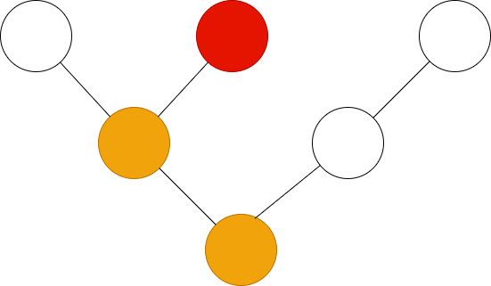
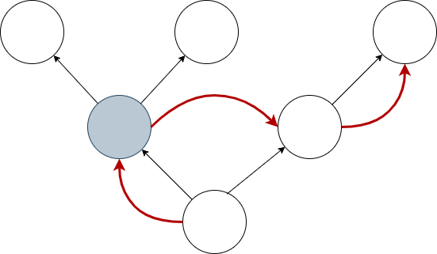

Canopy: a terminal UI library for Rust
In a forest each tree spreads its branches wide to maximise access to sunlight, but also carefully avoids touching the foliage of its neighbours. This phenomenon is called "crown shyness" - the forest canopy becomes an organic tiling of the sky.
Canopy works just the same, but in your terminal. Interface elements are arranged in an ordered tree, with each node managing only its children, who manage their own children in turn, until the leaf nodes tile the screen without overlap. All interface operations are defined cleanly as traversals of this node tree.
Concepts
Nodes
Rendering
Rust is fast, and terminals are slow. The key to performance is to send as few operations to the terminal as possible. Canopy uses a mark-and-sweep mechanism to redraw only what's needed. Nodes that need rendering are tainted using the taint or taint_tree functions. Nodes are automatically tainted if they handle an event or if their focus status changes.
Rendering is a pre-order traversal of the tree with the render method called on each tainted node.
Focus
Eactly one node has focus at any one time. If a node has focus, its ancestors up to the root of the tree are on the focus path. A corollary of this is that the root node is always on the focus path. Nodes advertise whether they can accept focus by implementing the can_focus method of the Node trait - any node can accept focus, even if it's not a leaf.
Canopy provides various functions for controlling the focus in a subtree. These are usually used from event handlers, letting a node control the focus location in the subtree below it.

The focus::next and focus::prev functions set focus to the next and previous nodes that accept focus in the pre-order traversal of the tree. In the images above, the grey nodes accept focus, and the red arrow shows where focus will move with respect to the pre-order traversal.


Canopy also has the spatial focus functions focus::{up,down,left,right}. These functions take the screen area of the currently focused node, then search for nodes that accept focus in the specified direction to choose the new focus.
When a node's focus status changes, it is automatically tainted for rendering in the next sweep.
Key Events

Key events are passed down from the current focus to the root, with the Node::handle_key method called on each node. Keys are only handled once - we stop passing the event along once the first node indicates that it's been handled. Handling a key event automatically taints the node, unless the EventResult::no_render flag in the response object is true.
Mouse Events

Mouse events are independent of the focus - we locate the leaf node that is under the mouse cursor, then pass event through the path from the leaf to the root for handling. For each node on the path, the Node::handle_mouse method is called, and we stop after the first node handles the event. Handling a mouse event taints the node, unless the EventResult::no_render flag on the response object is true.
Actions
Tick
The interval between tick events is specified when the event loop is started. Tick events are propagated as a pre-order traversal from the root of the tree, with the Node::handle_tick method called on each node. Because tick events can fire many times a second - efficiency is quite important. A tick handler can set the skip flag on its return value to signal that its children don't need to recieve the tick event. In the diagram above, the grey node has done this, so the traversal continues to a sibling.
Nodes that handle a tick event are automatically tainted.
Cursor management
For historical reasons, terminals don't distinguish between the location of the
visible cursor and the draw location for rendering. Drawing with the cursor
turned on will result in a visible cursor moving over the screen. Canopy manages
this by turning cursors off during rendering, and then enabling the cursor
during a separate cursor sweep afterwards. The cursor sweep gives all nodes on
the focus path the opportunity to define a cursor location and style using the
cursor method on the Node trait.